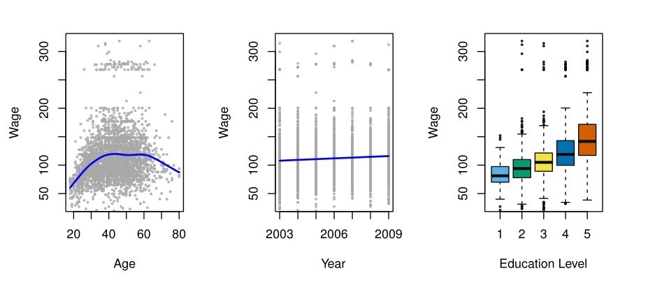
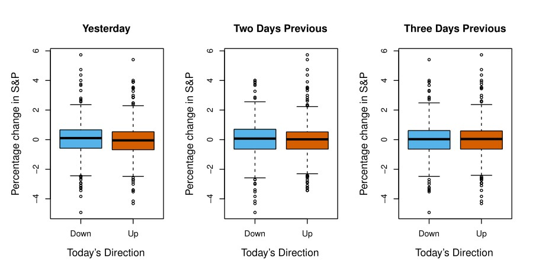
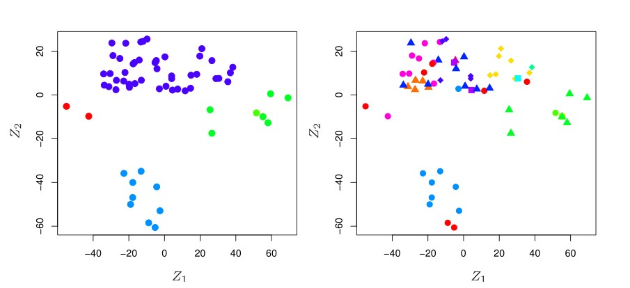

统计学习系列——引言
什么是统计学习？统计学习是指大量用于理解数据的工具。同时这些工具可分为有监督和无监督的。
广义来说(Broadly speaking)，有监督的统计学习包括构建一个用于预测、估计或基于一个或多个输入的输出的统计模型。
在无监督学习中，则只有输入而无有监督的输出；因此我们可以从这类数据中学习它们之间的关系和结构。
数据集
本书提供三个数据集用于举例说明统计学习的应用：工资数据集、股票市场数据集和基因表达数据集。
工资数据集
数据集主要内容是与美国大西洋地区男性工资相关的因素，通过此数据理解员工的年龄、教育程度和年份与工资之间的关系。因为该数据涉及到预测连续或定量的输出值，所以这通常被称为回归问题。

股票市场数据
但在具体的案例中我们也许会预测非数值的结果-比如分类或者定性(categorical or qualitative)的结果。该数据集包含2001年至2005年5年间标准普尔指数(S&P 500)的每日走势。目标是利用过去五天指数的百分比变化来预测该指数在某一天是上升还是下降。这里的统计学习问题涉及到预测某天的股市表现是会进入上升区间还是下降区间-即所谓的分类问题。

基因表达数据
前面两个例子表示了具有输入变量和输出变量的数据集，然而另一类重要的问题设计我们只观察输入变量而没有相应输入的情况。例如，在营销设置中，我们可能有许多当前客户或者潜在客户的人口统计信息，我们可能希望通过提取观测到的特征对个体进行分组，以此来了解那些类型的客户彼此相似。这就是所谓的聚类问题。针对该问题本文所使用的数据集为NCI60数据集，其内容包含64个癌症细胞系中每个细胞系的6,830个基因表达测量值。研究目的是根据他们的基因表达测量值来确定细胞系中是否有组成簇。

PS：分类和聚类的比较
- 聚类分析研究如何在没有训练条件的情况下将样本分为若干类
- 分类中，对于目标数据库存在哪些类是存在的，要做的是把每一条记录分别属于哪一类标记出来。
本书的结构
首先，第二章介绍了统计学习中的基本术语和概念，还展示了K临近分类-一种非常简单但在很多问题上表现都很好的方法。
接着，第三章和第四章涵盖了回归和分类的经典线性方法，其中第三章回顾了线性回归，这是所有回归方法的基础。第四章我们讨论了两种最重要的经典分类方法，逻辑回归分析(logistic regression)和线性判别分析(linear discriminant analysis)。
所有统计学习背景下最关键的问题是，如何根据应用问题选择最优的方法。因此第五章介绍了交叉验证(cross-validation)和Bootstrap，用来评估几种不同方法的精确性，并以此选择最好的一种。
在第六章中介绍更多的线性方法，包括逐步回归(stepwise selection)、岭回归(ridge regression)、主成分回归(principal components regression)、偏最小二乘法(partial least squares)和 Lasso回归(the lasso)。
紧接着，第七章介绍非线性统计学习，首先介绍一系列在单个输入变量问题上表现很好的非线性方法，接着介绍可用于拟合多个输入的非线性加法模型(non-*linear additive models)*。
第八章中介绍基于树的方法，其中包括套袋法(bagging)、提升法(boosting)和随机森林(random forests)。
第九章介绍一组执行线性和非线性分类的方法—支持向量机(Support vector machines)。
第十章介绍有关深度学习(deep learning)的方法。
第十一章探讨了生存分析(survival analysis)，一种回归方法，专门用于输出变量未完全观察的回归问题。
第十二章考虑的问题类型是只有输入变量而没有输出变量的设置，具体的方法有主成分分析(principal components analysis)、K均值聚类(K-means clustering)、层次聚类(hierarchical clustering)。